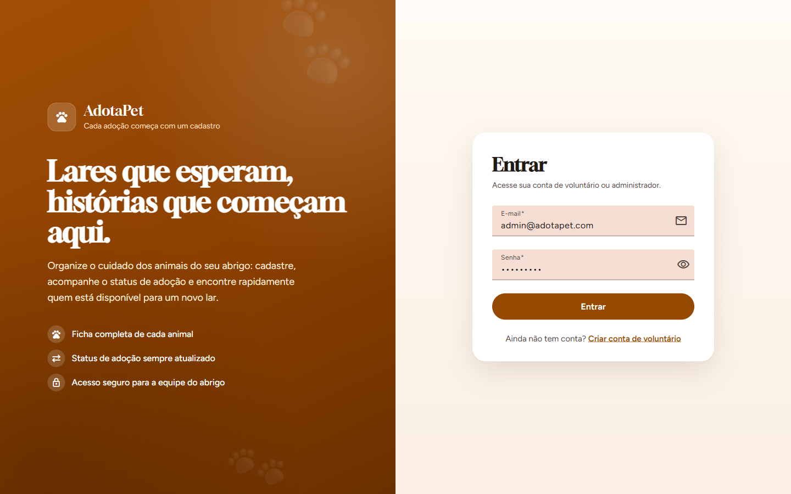
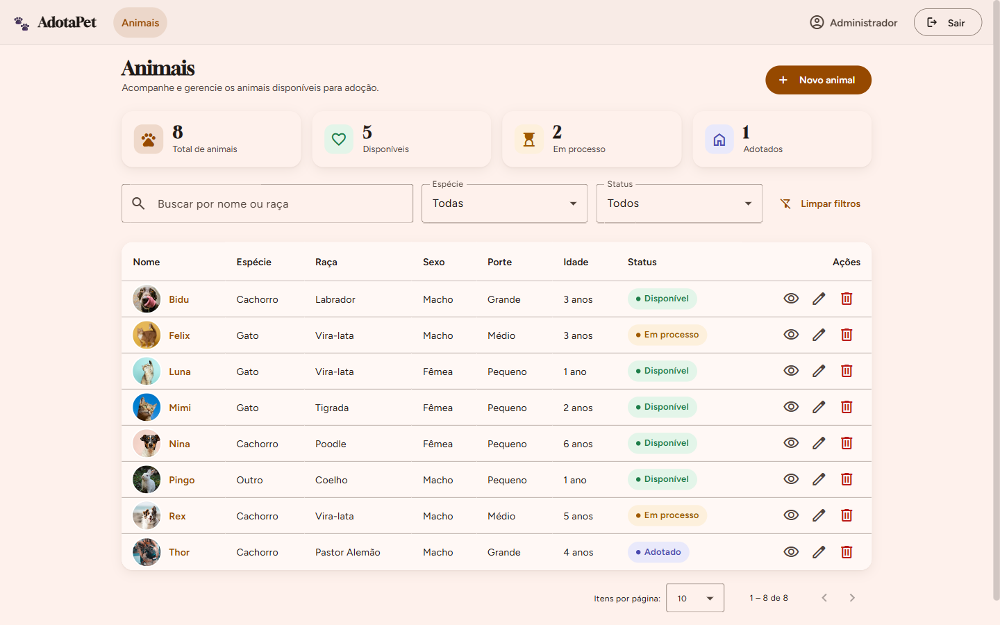
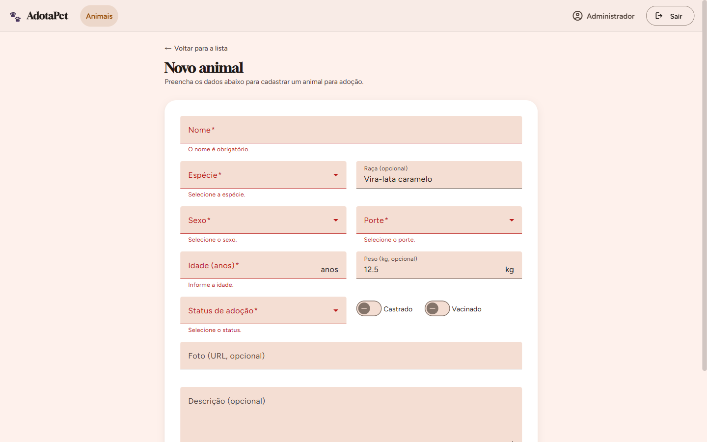
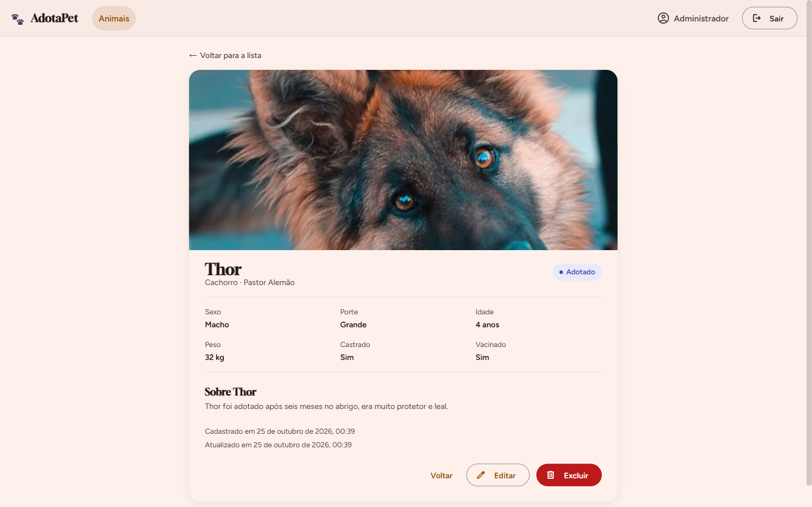
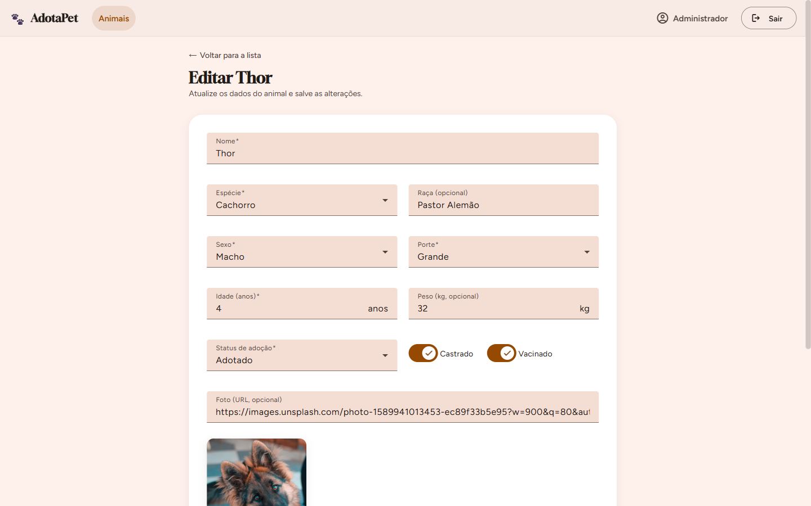
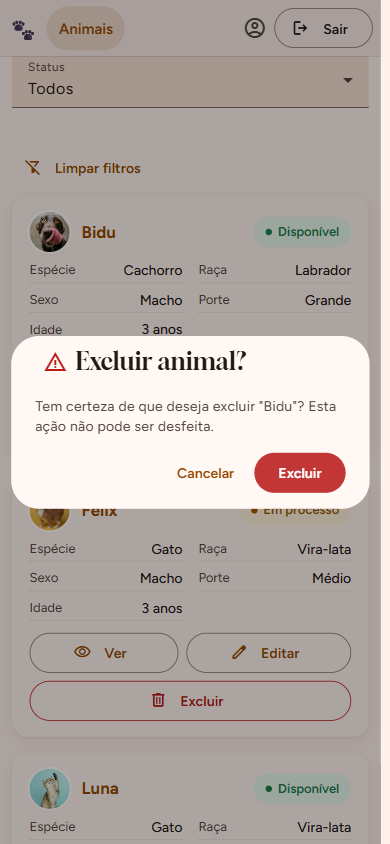
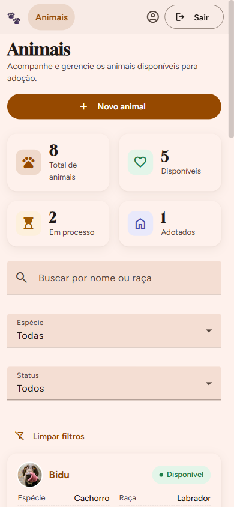
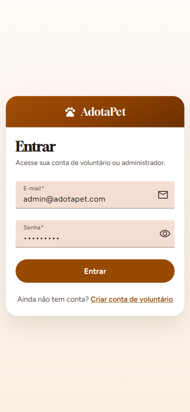

MVP web full stack para ONGs e abrigos gerenciarem os animais disponíveis para adoção.
Desenvolvimento de um MVP web full stack — Parte 1
ONGs e protetores independentes controlam os animais em planilhas, cadernos e grupos de mensagens. O resultado é previsível:
Dados de saúde, idade e porte ficam em lugares diferentes e se perdem com a troca de voluntários.
Animais já adotados continuam sendo anunciados, gerando retrabalho e frustração de quem quer adotar.
Não há registro confiável de quando cada animal entrou, mudou de status ou foi adotado.
Login validado no backend com JWT, cadastro de voluntário, rotas protegidas e botão Sair.
Indicadores por status, busca por nome ou raça, filtros por espécie e status e paginação.
Formulários validados com mensagens claras, inclusive os erros devolvidos pela API.
Ficha completa do animal e exclusão sempre com diálogo de confirmação.
usuariosanimaisPOST /api/animais → 201 + Location
GET /api/animais → 200 paginado
GET /api/animais/{id} → 200 · 404
PUT /api/animais/{id} → 200 · 404
DELETE /api/animais/{id} → 204 · 404
400 com a lista de campos inválidos, 401, 404 e 409, sempre em JSON pelo GlobalExceptionHandler.
O usuário informa e-mail e senha na página de login do Angular.
A API compara a senha com o hash BCrypt salvo no banco.
Devolve um JWT assinado com expiração de 2 horas. A senha nunca volta na resposta.
O interceptor envia Authorization: Bearer em cada requisição.
O JwtAuthenticationFilter valida assinatura e expiração antes de liberar o recurso.








Login, token inválido e expirado, CRUD completo, 400, 404 e 409, além dos serviços e guards do Angular.
Backend reiniciado e dados mantidos no PostgreSQL, também no perfil H2 em arquivo.
docker compose up -d, mvnw spring-boot:run e npm start.
Infraestrutura, integração e autenticação no frontend
Segurança: Spring Security, JWT e BCrypt
Entidades, CRUD, DTOs, validação e erros
Listagem, detalhes e exclusão no Angular
Cadastro, edição e formulários no Angular
Agora, a demonstração ao vivo: login, navegação pelas páginas e todas as operações do CRUD.